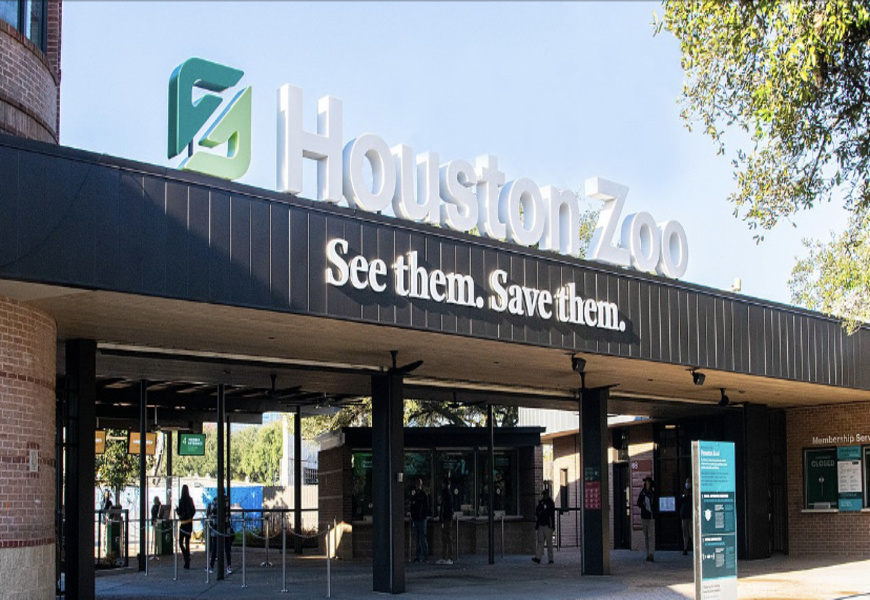
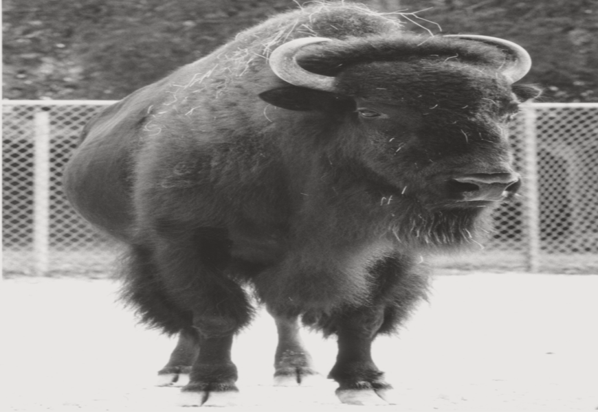
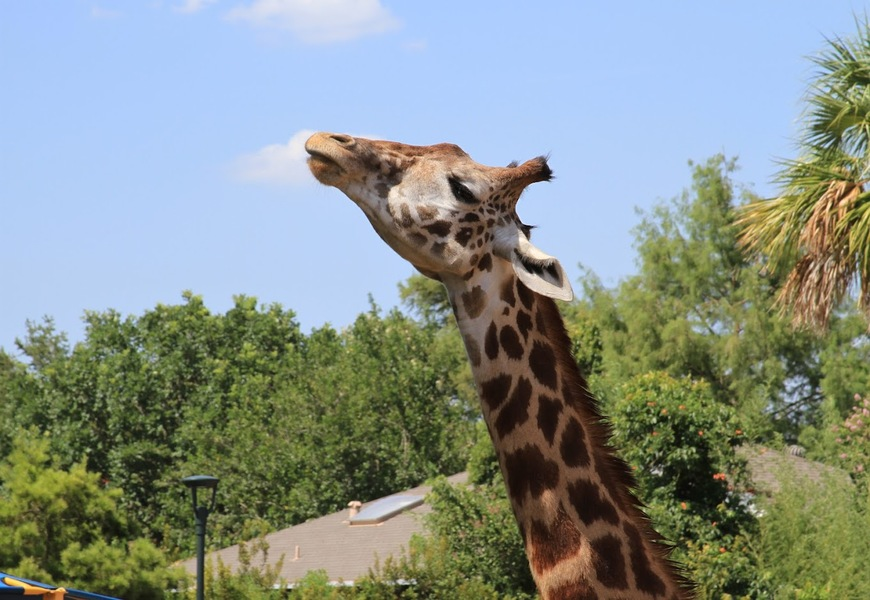
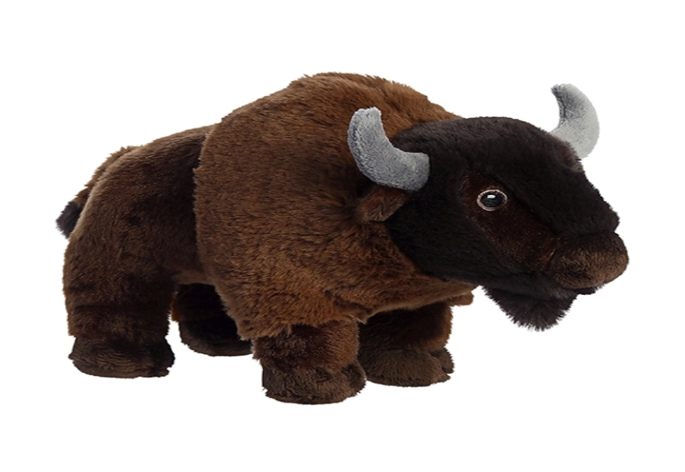
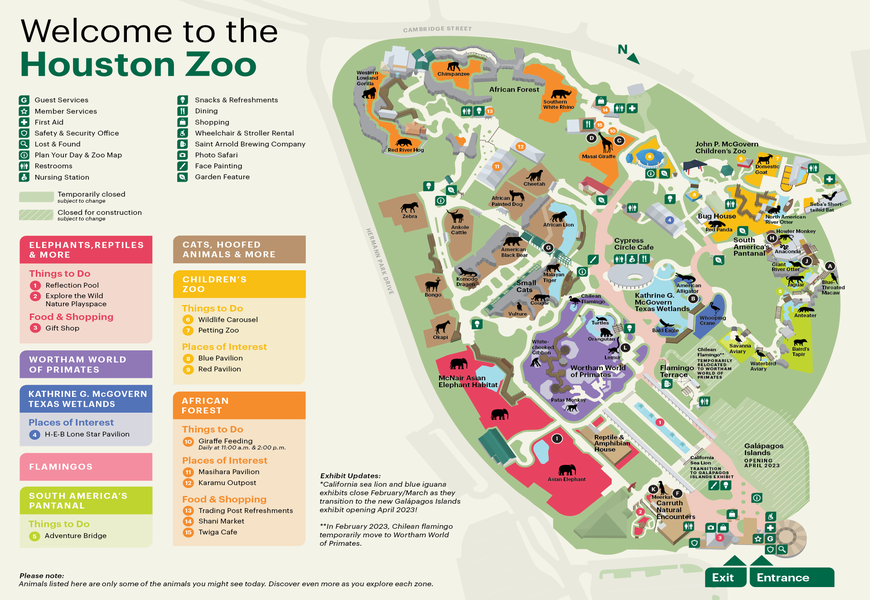

The Houston Zoo is 55 acres park located in Hermann Park, Houston, Texas. U.S. The Houston zoo started off on a small plot of land in Hermann Park. They began with a single bison named Earl in 1922. With the development for over 80 years, the zoo was operated by City of Houston until 2002. After that, the zoo transitioned into a non-profit organizations in a partnership with the city. The schema of the Houston Zoo is "See them, Save them". The fun fact about the Houston Zoo is they received 2.1 milions travelers each year and passed over many more most visited zoos and stand up as the second just right after the most visited zoo, San Diego Zoo.
Houston Zoo Welcome Entrance
Houston First Animal, Bison, Earl
The development plan of Houston Zoo is still growning. With a small fence in 1922, they grow more up to 55 acres as we know right now. However, in order to maintenance the animal wildlife, they try to connect to the far reaches of Central America and the islands of the Galápagos to our very own Texas Wetlands. The purpose of that is helping transforming the core of the Zoo to everyone.
Giraffe
Houston Zoo Iconic Sourvenir — Bison
The reason for Houston Zoo hook up more visitors come up to the super direction and guidance map. Everyone don't need to know the every single name of animal but still how to figure out where animals located with no-time spending.
